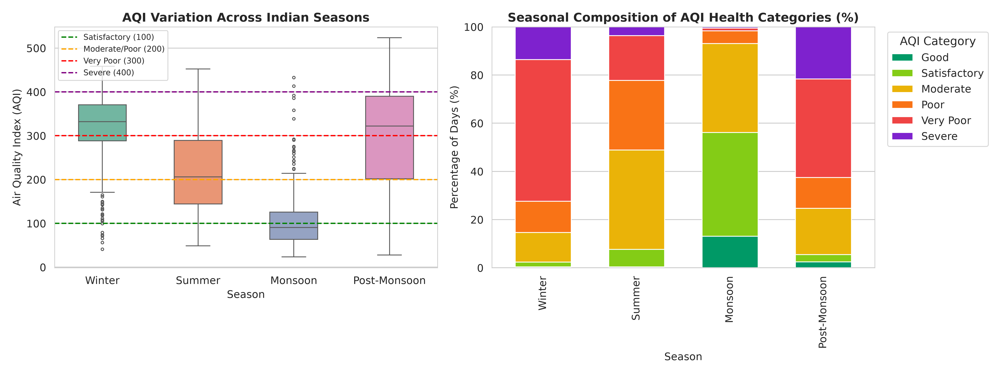

Essential Dataset Mismatch Caveat
Direct statistical comparisons between Delhi and Kanpur must be interpreted with extreme caution due to substantial structural differences in data provenance:
- Non-Identical Observation Periods: Delhi Alipur data spans 2017 to 2023. Kanpur data spans two discrete windows (July 2021 to October 2022 and February 2025 to August 2026).
- Station Count and Exposure Mismatch: Delhi is represented by a single peripheral highway transit station (Alipur on NH-44, n = 1,137 official days; 1,133 PM2.5 valid days), while Kanpur pools two stations (suburban Kalyanpur n = 815 station-days and urban mixed Nehru Nagar n = 813 station-days; total n = 1,628 station-days).
- Hiatus Discrepancy: Delhi has an operational gap of 731 days (2019 to 2020), while Kanpur has a 2.3-year reporting gap (late 2022 to early 2025).
Airshed Metric Comparison
The table below contrasts key statistical indicators between the two datasets, detailing the differing baselines and observation windows:
| Analytical Indicator | Delhi (Alipur, Site 204) | Kanpur (Pooled 2 Stations) | Methodological Note |
|---|---|---|---|
| Monitored Timeline | 2017 to 2023 (1,825 recorded rows; 1,137 official days; 731-day gap) | Jul 2021 to Oct 2022 & Feb 2025 to Aug 2026 (1,628 station-days: Kalyanpur 815, Nehru Nagar 813) | Non-identical calendar windows |
| Observed Mean PM2.5 | 112.4 µg/m³ (n = 1,133 valid PM2.5 days) | 57.1 µg/m³ (n = 1,628 station-days) | Both exceed annual NAAQS limit of 40 µg/m³ |
| Observed Mean PM10 | 207.2 µg/m³ (n = 1,125) | 93.4 µg/m³ (n = 1,628) | Elevated coarse fraction at both sites |
| Winter Mean PM2.5 (Nov to Jan) | 197.5 µg/m³ (n = 312) | 76.5 µg/m³ (n = 384) | Severe winter elevation in both basins |
| Monsoon Mean PM2.5 (Jul to Sep) | 34.3 µg/m³ (n = 294) | 21.5 µg/m³ (n = 372) | Precipitation washout lowers baseline |
| Winter-to-Monsoon Ratio | 5.75x (197.5 vs 34.3 µg/m³) | 3.25x pooled (Window 1: 4.99x; Window 2: 2.76x; Nov/Aug peak ratio: 4.76x) | Different seasonal baselines and observation windows |
| 24-hr NAAQS PM2.5 Exceedance (>60 µg/m³) | 62.6% of valid days (709 of 1,133) | 19.0% of monitored station-days | Higher exceedance along highway corridor |
| Winter PM2.5 / PM10 Ratio | 0.67 | 0.62 | High fine particulate fraction in cold months |
| Mean Toluene / Benzene Ratio | 2.18 (traffic corridor indicator) | Not recorded concurrently | VOC sensors unavailable in Kanpur public feeds |
Analysed Monitoring Stations Ranked by Mean Observed PM2.5
This ranking evaluates the three individual continuous ambient air quality monitoring (CAAQMS) stations analysed in our codebase by their arithmetic mean PM2.5 concentration across all valid reporting days.
| Rank | Station Name & ID | Setting / Environment | Observed Mean PM2.5 | Observation Period | Valid Rows (n) | Key Limitation |
|---|---|---|---|---|---|---|
| 1 | Alipur, Delhi (Site 204) | Northern peripheral highway transport corridor (NH-44) | 112.4 µg/m³ | 2017 to 2023 | n = 1,137 official days (1,133 PM2.5 valid days) | 731-day unmonitored operational gap; high heavy freight traffic influence |
| 2 | Nehru Nagar, Kanpur (Site 5662) | Dense urban mixed commercial and industrial basin | 58.7 µg/m³ | Jul 2021 to Oct 2022 & Feb 2025 to Aug 2026 | n = 813 station-days | 2.3-year reporting hiatus; single sensor location in central core |
| 3 | NSI Kalyanpur, Kanpur (Site 229252) | Semi-suburban educational campus corridor | 55.4 µg/m³ | Jul 2021 to Oct 2022 & Feb 2025 to Aug 2026 | n = 815 station-days | 2.3-year reporting hiatus; localized vegetation buffering |
Essential Caveat: The monitoring periods for Delhi and Kanpur are non-identical. Delhi Alipur reflects 2017 to 2023 data, whereas Kanpur reflects discrete windows from 2021 to 2022 and 2025 to 2026 (pooled n = 1,628 station-days across both stations). Micro-environments differ substantially between a major transit highway border (Alipur) and central urban residential monitors (Kanpur). This table reflects station records, not uniform citywide exposure.
Comparative Seasonal Cycles

Airshed Environmental Characteristics
While both urban centers lie within the Indo-Gangetic Plain, their localized topographic and transport dynamics differ:
1. Delhi (Alipur Highway Corridor)
Situated at 28.8°N on Delhi's northern periphery along National Highway 44, the Alipur station directly intercepts air masses entering the capital from Punjab and Haryana. In October and November, northwesterly winds transport post-harvest agricultural smoke plumes across this corridor, while constant commercial diesel truck traffic maintains high VOC levels (Toluene / Benzene = 2.18).
2. Kanpur (Central Gangetic Urban Basin)
Located approximately 430 km downstream at 26.5°N along the central Ganga valley, Kanpur's monitoring records reflect a mix of urban traffic, industrial boilers, and riverine basin topography. In winter, surface cooling reduces vertical ventilation, trapping emissions within the river basin without requiring long-distance transboundary smoke plumes.
What This Cannot Show
- This comparison does not represent a synchronized, contemporaneous regional study; calendar years and observation density differ between the two datasets.
- It cannot determine whether Delhi is inherently more polluted than Kanpur across all neighborhoods; station environments (highway border versus urban residential) differ in localized traffic exposure.
- Winter surge multipliers depend heavily on seasonal baseline levels, which vary by annual monsoon rainfall intensity and observation window.
Data and Code
The pipelines and comparative notebooks for both urban centers are published under the MIT License:
Cite This Page
Recommended academic citation format:
Singh, A. (2026). Regional Airshed Comparison: Capital Megacity versus Industrial River Basin. Signal Earth: Public Environmental Data Investigations. https://avnish36singh-arch.github.io/signal-earth-portal/investigations/comparison.html
Report a Problem
If you detect a numerical discrepancy or comparative overstatement, please file an issue on GitHub: